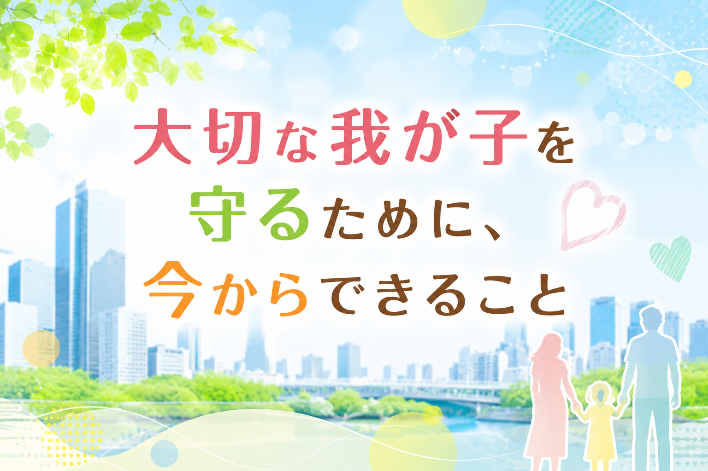

※本稿では、性暴力・性犯罪に関する内容を扱います。具体的な描写を目的とするものではなく、保護者・支援者・教育者向けの予防・啓発の観点から論じます。被害経験のある方は、無理に読み進めないでください。
※本稿は、特定の性別・属性・立場を一括して非難するものではありません。子どもを守るための教育と支援を考えるための論考です。
「うちの子に、どう話せばいいのだろう。」
そう感じている保護者の方に向けて、この記事を書きました。29年間、特別支援教育の現場に立ち続けてきた立場から、正直にお伝えします。障害のある子どもは、性暴力被害に遭いやすい環境に置かれやすい。その事実から目を背けることは、子どもを守ることになりません。この記事では、「同意」をどう伝えるか、学校や施設に何を確認すべきか、そして万が一のときにどう動くかを、できる限り具体的にお伝えします。
目次
現場から保護者のみなさんへ
子どもに「性暴力」の話をするのは、むずかしい。
特に、障害のある子どもを育てている保護者の方にとっては、どう伝えたらよいか、どこまで伝えたらよいか、迷うことが多いと思います。
「まだ早いのではないか。」
「怖がらせてしまうのではないか。」
「うちの子には、理解できないかもしれない。」
そういう思いは、自然なことです。
ただ、29年間の現場で私が見てきたことからはっきり言えることがあります。「話さないこと」は、子どもを守りません。話さないまま育った子どもは、何かあったときに「これは変だ」と気づく言葉を持てません。「誰かに言っていい」という選択肢を知らないまま、ひとりで抱えてしまうことがあります。
この記事は、完璧な親になるための記事ではありません。
今日からできることを、1つずつ伝えるための記事です。
障害のある子どもと性暴力――現実を知ること
まず、知っておいてほしい事実があります。
障害のある子どもは、そうでない子どもに比べて、性暴力・性的虐待の被害に遭うリスクが高いとされています。この事実は、国内外の研究・調査で繰り返し確認されています。
なぜそうなるのか。被害に遭う子どもが悪いわけでは、まったくありません。
理由は、構造にあります。
① 「嫌」と言いにくい関係がある
介助・支援・指導という関係は、どうしても上下関係になりやすいものです。日頃から指示に従うことを求められる環境では、「嫌だ」と言うことが難しくなります。
② コミュニケーションの困難がある
言葉で伝えることが難しい子どもは、被害を言語化できないことがあります。伝えようとしても、うまく伝わらなかったり、信じてもらえなかったりすることもあります。
③ 身体接触の機会が多い
着替えや入浴、排泄の介助、医療的ケア。障害のある子どもは、身体に触れられる場面がどうしても多くなります。その日常の中で、「これはおかしい」という感覚が育ちにくくなることがあります。
④ 「信じてもらえないかもしれない」という恐れ
コミュニケーションに困難を抱える子どもが何かを訴えても、「誤解しているのでは」「言葉を正確に使えていないのでは」と受け取られてしまうことがあります。
これらは、子ども個人の問題ではなく、子どもが置かれる環境と構造の問題です。
厚生労働省が毎年公表する「都道府県・市区町村における障害者虐待事例への対応状況等」では、障害福祉施設従事者による性的虐待の件数が報告されています。[1] 報告されているのは、ほんの一部にすぎません。
知ることは、怖さを増やすためではありません。
守るために、現実を見ることが必要なのです。
「性欲は三大欲求だから仕方ない」という言葉の危険性
日常でよく耳にする言葉があります。
「男だから仕方ない」
「性欲は三大欲求だから仕方ない」
「本能だから抑えられない」
この言葉が、なぜ危ないのか。1つだけ覚えてほしいのです。
この言葉は、加害を「自然現象」のように語ります。雨が降るように、雷が落ちるように、性暴力も「起きてしまった」。そういう語り方に近づいてしまう。しかし、性暴力は自然災害ではありません。
また、「三大欲求」という言い方は、厳密な心理学の定説ではなく、広まった俗説にすぎません。「食べなければ死ぬ」「眠らなければ心身が壊れる」という生命維持の欲求と、他者の身体・同意・尊厳に関わる性行動を、同じ箱に入れること自体が、乱暴な話なのです。[2]
睡眠は、意識を超えて訪れます。しかし性行動には、必ず相手がいます。
「性欲がある」ことと、「他者の身体に踏み込んでよい」ことは、まったく別の問題です。
この区別を大人が持っていなければ、子どもに伝えることもできません。そして加害者は、この曖昧さを長年にわたって利用してきました。
欲求があることは、行為の言い訳にはなりません。
同意のない性的行為は、欲求の強さにかかわらず、性暴力です。[3]
「同意」を子どもに伝えるということ
では、子どもに何を、どう伝えればよいのか。
むずかしく考える必要はありません。まず、3つのことを伝えてほしいのです。
① 自分の体は、自分のもの
「水着で隠れているところは、プライベートゾーン。自分以外の人が触れるときは、必ず理由が必要。」
医療的なケアや着替えの介助など、必要な場面で体を触られることはあります。そのときは「なぜ触るのか」を大人が言葉にする習慣をつけてください。「着替えを手伝うね」「診察のためにここを見るよ」。こうした一言が積み重なることで、子どもの中に「言葉なく触れられることはおかしい」という感覚が育ちます。
② 嫌なときは「嫌」と言っていい
「嫌」が言えない子もいます。特に、コミュニケーションに困難を抱える子どもは、言葉ではなく表情や行動で「嫌」を伝えることがあります。
大切なのは、子どもの「嫌」のサインに大人が気づいて、きちんと受け取ることです。
そして日頃から、「嫌なことは嫌と言っていい。先生にでも、親にでも」と繰り返し伝えてください。
「先生の言うことを聞きなさい」「大人に逆らってはいけない」という言葉だけで育つと、断れない子になってしまいます。権威に従うことと、自分の体を守ることは、両立できます。
③ 困ったら、話してくれていい
「もし何か嫌なことがあったら、お父さん（お母さん）に話してくれていい。どんな話でも、信じるよ。」
この言葉を、日頃から伝えておくことが大切です。
被害に遭ったとき、子どもが一番恐れるのは「信じてもらえないかもしれない」「怒られるかもしれない」という気持ちです。「話してくれていい」という言葉を先に伝えておくことで、その壁を一枚、外しておくことができます。
障害特性に応じた伝え方のヒント
知的障害のある子どもへ
絵や図を使って、「これはOK」「これはNG」を具体的に示しましょう。一度伝えれば大丈夫ではありません。繰り返すことが大切です。日常の中で、折に触れて確認してください。
自閉スペクトラム症（ASD）のある子どもへ
ルールとして明示することが有効な場合があります。「体を触っていいのは、本人が同意したときだけ」「誰かに触られて嫌だったら、その場を離れてよい」。状況の読み取りが難しくても、ルールがあれば動きやすくなります。
身体障害のある子どもへ
介助の場面が多いからこそ、「必要な介助と、そうでない接触の違い」を伝えることが重要です。介助する大人が毎回「○○するよ」と言葉にする習慣を共有することが、子どもの感覚を守ります。
コミュニケーションに困難がある子どもへ
「嫌」を伝える手段を一緒に作りましょう。カードでも、サインでも、特定のジェスチャーでも。「これが出たら、その場を止める」というルールを、学校・施設と共有することが大切です。
学校・施設に確認してほしいこと
子どもを守る責任は、家庭だけにあるわけではありません。学校・特別支援学校・放課後等デイサービス・入所施設など、子どもが過ごすすべての場所が、責任を持つ必要があります。
保護者として、次のことを確認する権利があります。
確認してほしい5つのこと
① 生命の安全教育を実施しているか
文部科学省は、すべての学校で「生命の安全教育」を推進しています。[4] 特別支援学校・学級でも、発達段階に応じた実施が求められています。「どんな内容をやっているか」と聞くことは、正当な質問です。
② 着替え・入浴・排泄の介助の際に、複数人対応のルールがあるか
密室で、1対1。これが最もリスクの高い環境です。「必ず複数人が関わる」「ドアを開けておく」など、具体的な取り決めを確認してください。
③ 子どもが「困った」を伝えられる相手が複数いるか
担任の先生1人だけでは、担任が加害者だった場合に子どもの逃げ場がなくなります。学校内に、複数の相談できる大人がいるかどうかを確認してください。
④ 「子どもが言ったことをまず信じる」文化があるか
障害のある子どもが「○○された」と言ったとき、「誤解しているのでは」「言葉を正確に使えていないのでは」と疑うのではなく、まず受け取る姿勢が組織にあるかどうか。これは組織文化の問題です。
⑤ 保護者への報告ルートが明確か
何か起きたとき、どのように保護者に連絡が来るのか。「内部処理」が行われないよう、報告経路を事前に確認しておきましょう。
今日から変えたい言葉
子どもの周りにいる大人が、無意識に使いがちな言葉があります。
悪意があって使われるわけではありません。ただ、こうした言葉が積み重なると、子どもは「自分の体は自分で守れない」「嫌と言ってはいけない」「被害を受けても黙るべきだ」という感覚を育ててしまいます。
手放したい言葉
「嫌でも、先生（大人）の言うことを聞きなさい」
「大ごとにするな」
「なぜ断らなかったの」
「なんで早く言わなかったの」
「あなたにも隙があったんじゃない」
「相手も悪気はなかったんじゃないか」
代わりに使いたい言葉
「嫌なことは嫌と言っていい。先生にでも、お父さん（お母さん）にでも」
「話してくれてよかった。あなたは悪くない」
「断れなかったのは、あなたのせいじゃない」
「責任は、そういうことをした人にある」
「困ったら必ず言いに来て。一緒に考えるから」
これらは、一度言えばよいのではありません。
繰り返し、日常の中で伝えていくことが大切です。
もし「何かあったかもしれない」と感じたら
子どもの様子が変わった。
特定の場所や人を嫌がるようになった。
急に夜泣きや退行が始まった。
体の特定の部分を触らせなくなった。
そんなとき、まず保護者自身が落ち着くことが大切です。
最初にすること
① まず信じる
子どもが「こういうことがあった」と言ったなら、まず「そうだったの」と受け取ってください。「本当に？」「誤解じゃないの？」という反応は、子どもの口を閉じさせます。
② 詳しく聞こうとしない
「誰に？」「どこで？」「何回？」と次々に問いただすことは、子どもを傷つけます。また、詳細を聞きすぎると、後の専門機関の聴取に影響が出る場合があります。「話してくれてありがとう」だけで、十分です。
③ 専門の相談窓口に連絡する
一人で抱え込まないでください。次のセクションに、相談先をまとめています。
④ 学校・施設への対応は、専門家と相談してから
すぐに学校や施設に連絡したい気持ちはよくわかります。ただ、先に相談窓口や専門家に状況を伝え、対応の順序を確認してから動く方が、子どもを守るうえで有効なことが多いです。
相談先
「どこに相談すればよいかわからない」という状況が、被害を長引かせます。
日頃から、相談先を知っておいてください。
性犯罪・性暴力被害について相談したい方へ
性犯罪・性暴力被害者のためのワンストップ支援センター：#8891
産婦人科医療・カウンセリング・法律相談などと連携しています。IP電話（光電話等）からつながらない場合は、お住まいの都道府県のワンストップ支援センターに直接お電話ください。
障害のある子どもを持つ保護者の方へ
障害者虐待防止センター（各市区町村）
障害者への虐待（性的虐待を含む）を通報・相談できる窓口です。施設従事者・使用者による虐待、家庭内での虐待に対応しています。お住まいの市区町村の担当窓口にお問い合わせください。
発達障害者支援センター（各都道府県）
発達障害のある方本人・家族の生活全般に関する相談に応じます。困りごとがあれば相談してみてください。関係機関への橋渡しを依頼できる場合もあります。
子どもの人権110番（法務省）：0120-007-110（無料）
子どもへのいじめ・虐待・体罰に関する相談窓口です。障害のある子どもからの相談も受け付けています。
緊急の場合は、身の安全を最優先してください。警察（110番）または救急（119番）に連絡してください。
おわりに
この記事を最後まで読んでくださった保護者の方へ。
子どもを守りたいと思っているから、あなたはここまで読んでくれた。その気持ちが、すでに子どもの安全につながっています。
「うちの子には、むずかしいかもしれない。」
そう思っても、あきらめないでほしいのです。
完璧に伝えられなくていい。
繰り返すことが、大切なのです。
「自分の体は、自分のもの。」
「嫌なことは嫌と言っていい。」
「話してくれていい。信じるよ。」
この3つを、何度でも伝えてください。
子どもが安心して話せる大人が、1人でも身近にいること。
それが、最も確かな「守り」になります。
そして、何かあったとき。
あなた自身も、一人で抱えなくていいのです。
相談先に電話してください。専門家に話してください。
子どもを守るために助けを求めることは、弱さではありません。
参考資料
- 厚生労働省 「令和6年度 都道府県・市区町村における障害者虐待事例への対応状況等」
- A. H. Maslow "A Theory of Human Motivation" (1943)
- CDC "About Sexual Violence"
- 文部科学省 「性犯罪・性暴力対策の強化について／生命の安全教育」
- 内閣府男女共同参画局 「男女共同参画白書 令和7年版 第2節 性犯罪・性暴力」
- 内閣府男女共同参画局 「性犯罪・性暴力被害者のためのワンストップ支援センター」